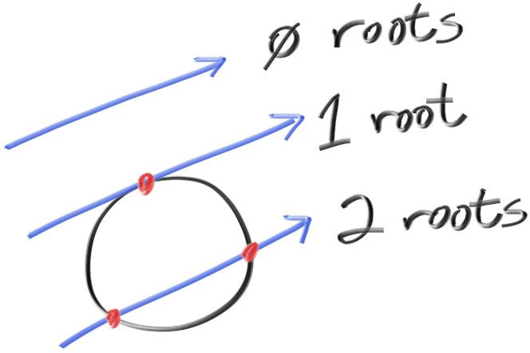

Ajouter une sphère
Ajoutons un seul objet à notre ray tracer. Beaucoup de personnes utilisent des sphères dans les ray tracers car calculer si un rayon frappe une sphère est assez simple. Rappelez-vous de l'équation pour une sphère centrée sur l'origine du rayon \(R\) est \(x^2 + y^2 + z^2 = R^2\). D'une autre façon, pour un point \((x,y,z)\) placé sur la sphère, alors \(x^2+y^2+z^2=R^2\). Si le point \((x,y,z)\) est à l'intérieur de la sphère, alors \(x^2+y^2+z^2 \lt R^2\) et si un point \((x,y,z)\) est à l'extérieur de la sphère, alors \(x^2+y^2+z^2 \gt R^2\).
Ca se complexifie un peu si le centre de la sphère est donnée par \( (c_x, c_y, c_z)\) :
\[ (x-c_x)^2 + (y-c_y)^2 + (z-c_z)^2 = R^2 \]
Dans le graphisme, vous voulez quasiment toujours que vos formules soient en termes de vecteurs pour que tous les trucs x/y/z soient gérés par la classe vec3. Ainsi, notez que le vecteur de centre \( c=(c_x,c_y,c_z) \) au point \(P=(x,y,z)\) est noté \( (p-c) \). Donc :
\[ (p-c) \cdot (p-c) = (x-c_x)^2 + (y-c_y)^2 + (z-c_z)^2 \]
L'équation de la sphère est terme de vecteurs s'écrit alors :
\[ (p-c) \cdot (p-c) = R^2 \]
On peut lire cette équation comme "tout point \(p\) qui satisfait l'équation est sur la sphère".
Nous voulons savoir si notre rayon \( p(t)=a+t \vec{b} \) touche la sphère quelque part. S'il touche la sphère, il y a un \(t\) pour lequel \(p(t)\) satisfait l'équation de la sphère. Donc, nous cherchons un \(t\) où la relation suivante est vraie :
\[ (p(t) - c) \cdot (p(t) - c) = R^2 \]
ou, sous sa forme développée du rayon \(p(t)\) :
\[ (a+t\vec{b} - c) \cdot (a+t\vec{b} - c)=R^2 \]
En suivant les règles de l'algèbre appliquées aux vecteurs, si nous développons cette équation et que nous déplaçons tous ses termes à gauche, nous obtenons :
\[ t^2\vec{b} \cdot \vec{b} + 2t\vec{b} \cdot (a \vec{-} c) + (a \vec{-} c) \cdot (a \vec{-} c) - R^2 = 0 \]
Les vecteurs et R dans cette équation sont tous constants et connus. L'inconnu est \(t\) et l'équation est quadratique, comme vous l'avez surement vu en cours de maths au lycée. Nous pouvons résoudre cette équation pour \(t\) et il y a une racine qui est soit positive (donc 2 solutions réelles), soit négative (aucune solution dans l'espace des réels) ou zéro (une seule solution). Dans le graphisme, l'algèbre a toujours une relation très directe avec la géométrie.
Ce que nous avons est :

Si nous transposons ces maths en code dans notre programme, nous pouvons tester ça en colorant en rouge chaque pixel qui touche une petite sphère que nous plaçons à \(-1\) sur l'axe Z.
bool hit_sphere(const vec3& center, double radius, const ray& r) {
vec3 oc = r.origin() - center;
auto a = dot(r.direction(), r.direction());
auto b = 2.0 * dot(oc, r.direction());
auto c = dot(oc, oc) - radius*radius;
auto discriminant = b*b - 4*a*c;
return (discriminant > 0);
}
vec3 ray_color(const ray& r) {
if (hit_sphere(vec3(0,0,-1), 0.5, r))
return vec3(1, 0, 0);
vec3 unit_direction = unit_vector(r.direction());
auto t = 0.5*(unit_direction.y() + 1.0);
return (1.0-t)*vec3(1.0, 1.0, 1.0) + t*vec3(0.5, 0.7, 1.0);
}
Nous obtenons :

Il manque encore toute sorte de choses, comme le shading (l'ombrage), les rayons de réflexions, d'autres objets... mais nous avons déjà fait plus que la moitié du chemin depuis que nous avons commencé ! Une chose à garder en mémoire est que nous avons testé si le rayon touche la sphère (ou pas), mais les solutions de \(t<0\) fonctionnent biens également. Si vous changez le centre de la sphère à \(z=+1\) vous aurez exactement la même image parce que vous voyez les choses derrière vous... Ce n'est pas normal, nous corrigerons ça bientôt.